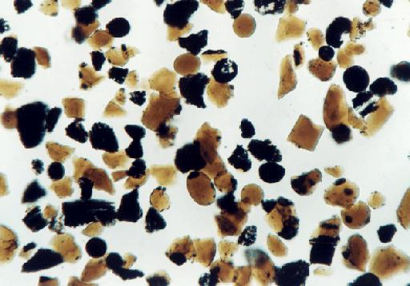

LUNAR SAMPLES RETURNED BY APOLLO ASTRONAUTS

These orange glass spheres and fragments are the finest particles ever
brought back from the Moon. The particles range in size from 20 to 45
microns. The orange soil was brought back from the Taurus-Littrow
landing site by the apollo 17 crewmen. Scientist-Astronaut Harrison J.
Schmitt discovered the orange soil at Shorty Crater. The orange
particles, which are intermixed with black and black-speckled grains,
are about the same size as the particles that compose silt on Earth.
Chemical analysis of the orange soil material has show the sample to
be similar to some of the samples brought back from the Apollo 11 (Sea
of Tranquility) site several hundred miles to the southwest. Like
those samples, it is rich in titanium (8%) and iron oxide (22%). But
unlike the Apollo 11 samples, the orange soil is unexplainably rich in
zinc. The orange soil is probably of volcanic origin and not the
product of meteorite impact.
Digitized by Calvin J. Hamilton.
Views of the Solar System Copyright © 1997 by Calvin J. Hamilton.
All rights reserved.
Last modified
December 2020 by rwo
Back to the list of study guides
Back to the ASTR 1210 Home Page